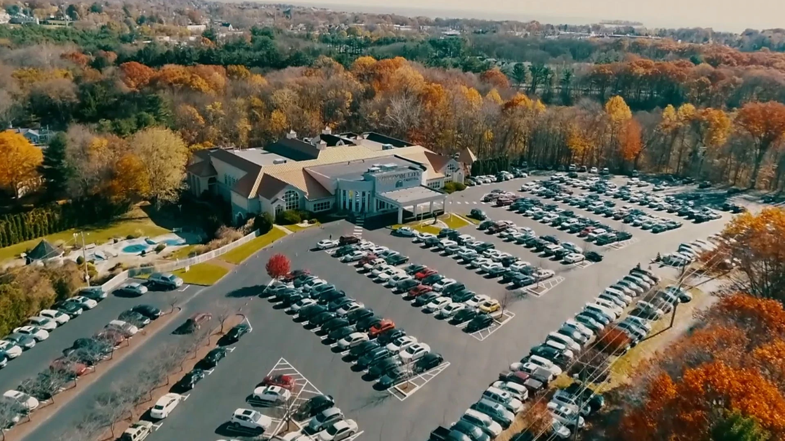

Kids Ministry
A place to learn.
A place to belong.
Ages6 weeks–6th grade
Sunday classesOpen at 9:45 AM
With classes ranging from ages 6 weeks to 6th grade, Kingdom Kids uses interactive media, small groups, and hands-on activities to create a fun, safe environment where children learn that Jesus loves them and that they are valued with an individual and specific purpose. Kids classes open every Sunday morning at 9:45 AM.

Kingdom Kids is always on the lookout for volunteers! If you'd like to help make a difference in the lives of our children by showing support and encouragement through the love of Jesus Christ, please sign up today!